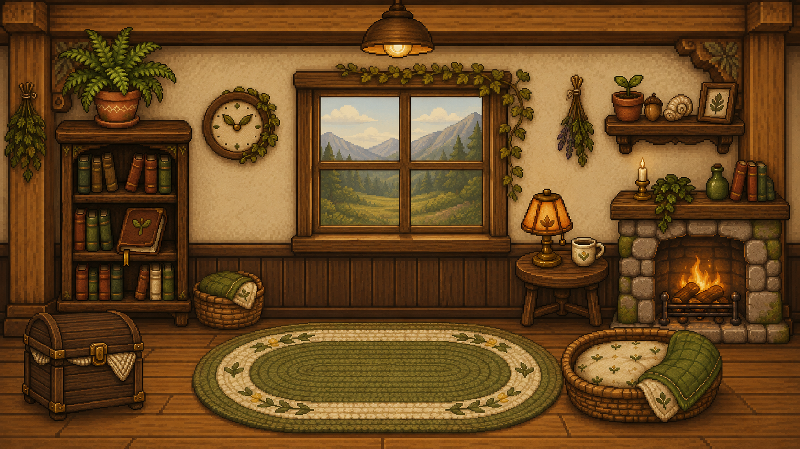

真实动作反馈
完整应用将姿态与训练进度关联到摄像头动作识别；本展示不采集摄像头数据。
PosturePal 将桌前姿态、轻量训练与陪伴感结合在一个温暖的像素世界里。

点击切换五个设计画面。
温暖的木屋作为产品入口，把提醒、伙伴和日常进度融入一个连续的空间。
把健康反馈做得可理解、可持续，也足够有趣。
完整应用将姿态与训练进度关联到摄像头动作识别；本展示不采集摄像头数据。
日历、成长与成就把每天的小变化组织成一条可回看的长期路径。
像素伙伴、双语界面与乡村小屋美术，让提醒更像邀请，而不是警报。